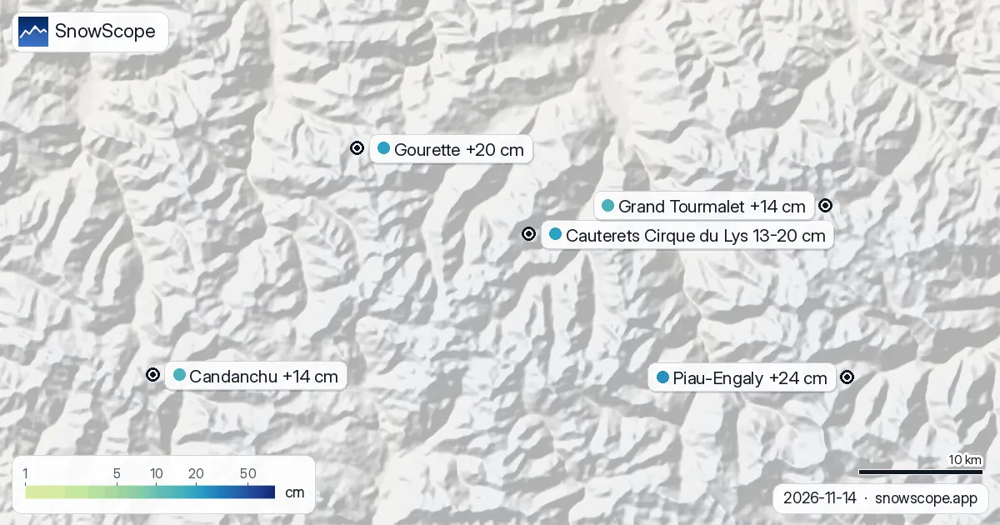

Fresh snow in the Pyrenees compared: Cauterets Cirque du Lys leads with 13–20 cm in 72 hours (14 November)
The white area on the map went from 910 km² (12 November) to 1,100 km² today, and the forecast says 640 km² on 17 November. Mixed rain and snow: snow is expected only up high, about 13–20 cm near the top of Cauterets Cirque du Lys (2,420 m), with rain below about 2,340 m. Fresh snow at Cauterets Cirque du Lys: 13–20 cm in the last 72 hours, including 12 cm in the last 24. Model depth on the upper slopes: about 9 cm. Fresh-snow amounts are among the hardest numbers to get exactly right; the ranking is more reliable than each value.
See the live snow forecast for Cauterets Cirque du Lys in the SnowScope appSnow depth, powder alerts and the 3D map, free.
The fresh-snow numbers
Runners-up over the last 72 hours: Piau-Engaly, Gourette and Candanchu, with 19 cm, 20 cm and 14 cm.
The count of the day in the Pyrenees: 19 of 53 resorts with snow up high, 1,100 km² of snow-covered ground.
| Resort | Snow depth | New snow, 72 h | Coming, next days | Top |
|---|---|---|---|---|
| Cauterets Cirque du Lys | 9 cm | 20 cm | 12 cm | 2,420 m |
| Piau-Engaly | 11 cm | 19 cm | 8 cm | 2,527 m |
| Gourette | 9 cm | 20 cm | 11 cm | 2,453 m |
| Candanchu | 5 cm | 14 cm | 12 cm | 2,238 m |
| Grand Tourmalet | 5 cm | 14 cm | 7 cm | 2,464 m |

Ground truth
How sure are we? Resort values are model estimates for the upper slopes; stations are measurements, each at one point on the date shown.
Coming up
Until 17 November the forecast gives 13–20 cm at Cauterets Cirque du Lys, 12 cm at Candanchu and 16–20 cm at Gourette, with less certainty the further out you go.
Forecasts a few days ahead can change: look at the map again the day before you travel.
By height and slope
Cauterets Cirque du Lys, 16 November: freezing level 2,470 m to 4,240 m, above the top (2,420 m). Rain or wet snow is possible on every slope.
Safety and avalanche level
The official rating for the Cauterets Cirque du Lys area is 1 on the 5-level scale today (Météo-France – Bulletin d'estimation du risque d'avalanche).
After fresh snow, wind builds drifts on sheltered slopes. Off-piste, the first days after a snowfall need the most care.
Tips for skiers
- The best powder lasts a morning, not a week. Go early, before the sun and the crowds get to it.
- A rule of thumb that is rarely wrong: high and north-facing keeps snow, south-facing loses it first.
- Before you ski off-piste or go touring, read the official avalanche bulletin (links below).
- Snow on the map does not mean a resort is open: check lifts and opening dates on the resort's website.
- Get a powder alert in the SnowScope app to know when Cauterets Cirque du Lys gets fresh snow.
About these numbers
Resort snow depths are the deepest snow on the resort's upper slopes from the SnowScope snow model (about 1 km, run of 14 November); they are estimates for an area, not a measurement at one point. Station values are measurements on the date shown. Forecasts can change. Always read the official avalanche bulletin before going off-piste.
Official avalanche bulletins: Météo-France – Bulletin d'estimation du risque d'avalanche
Cite this report
For research, teaching or the press: the numbers and charts are free to reuse under CC BY 4.0 with this citation.
SnowScope (2026), Fresh snow in the Pyrenees compared: Cauterets Cirque du Lys leads with 13–20 cm in 72 hours (14 November), https://snowscope.app/blog/en/2026/11/pyrenees-cauterets-cirque-du-lys-fresh-snow-powder-alert-14-november-2026.html, accessed 2026-11-14
SnowScope (Atlas Labs). (2026, November 14). Fresh snow in the Pyrenees compared: Cauterets Cirque du Lys leads with 13–20 cm in 72 hours (14 November). SnowScope snow reports. https://snowscope.app/blog/en/2026/11/pyrenees-cauterets-cirque-du-lys-fresh-snow-powder-alert-14-november-2026.html
BibTeX
@misc{snowscope2026pyreneescauteretscirqued,
author = {{SnowScope (Atlas Labs)}},
title = {Fresh snow in the Pyrenees compared: Cauterets Cirque du Lys leads with 13–20 cm in 72 hours (14 November)},
year = {2026},
month = nov,
howpublished = {\url{https://snowscope.app/blog/en/2026/11/pyrenees-cauterets-cirque-du-lys-fresh-snow-powder-alert-14-november-2026.html}},
note = {Published 2026-11-14 12:53 UTC; accessed 2026-11-14}
}· CC BY 4.0 · Methods, data and tools →
Cauterets Cirque du Lys: snow and temperature by height, this winter vs last (tools) →
Follow Cauterets Cirque du Lys
Free: a message when fresh snow is coming, and the forecast every morning.
More snow reports

Up to 37 cm: that is what our forecast gives Piau-Engaly by 13 November. Until 13 November, our forecast gives 37 cm at Piau-Engaly, 21 cm at …

We compared today's snow at 4 resorts in the Pyrenees with the same date in each of the past 46 winters. 1 of them are clearly above normal.

Today's maps look two weeks ahead in the Pyrenees, 13 November to 26 November. They come from the two global models that reach two weeks, ECMWF and …